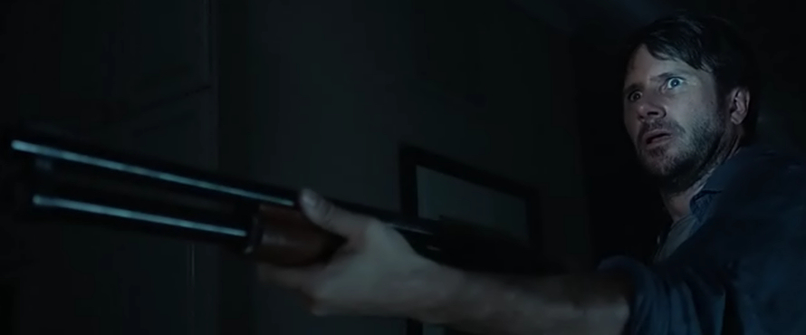
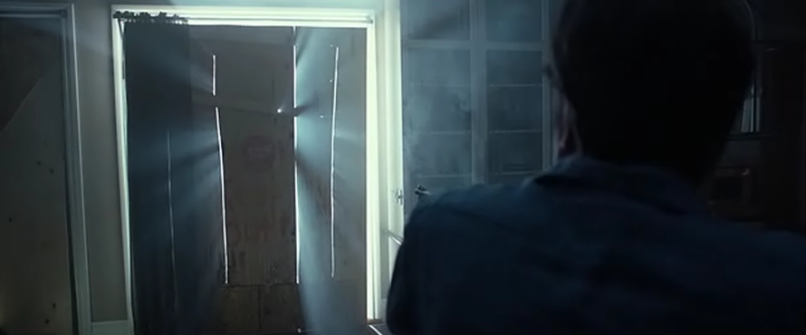
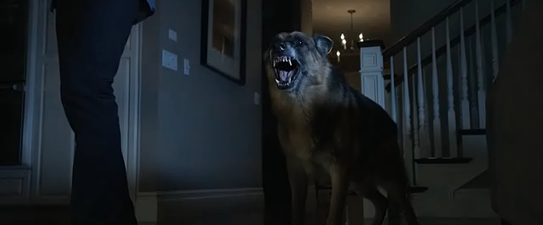
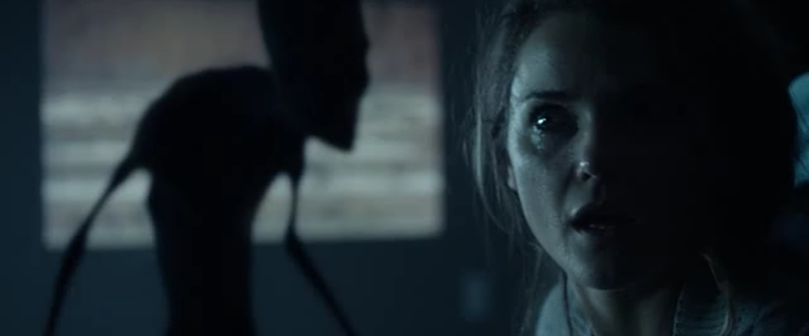

Dark Skies is a science fiction horror film produced by Blumhouse Productions, a low-budget horror-movie production company, which created some well known genre franchises such as Paranormal Activity and Insidious.
The Barretts, consisting of father Daniel, mother Lacy, older son Jesse, and younger son Sammy, are a pretty average American family. Daniel has been out of work for some time now, which is putting a lot of strain on him and his wife. To distract little Sammy from their parents’ fights, at nights, Jesse reads him scary stories about The Sandman.
After one morning Lacy finds food from the fridge splattered all over the kitchen floor, and cans, cartons and various kitchen utensils put on top of each other thus creating precarious geometrical structures, she questions her kids, to which Sammy tells her that The Sandman has done it before visiting his room. At first, Daniel and Lacy dismiss this as a childish fantasy and conclude that it was either of the boys who has done it.
This is just the beginning though. Family photographs and other items in the house get misplaced, security alarms go off for no apparent reason, flocks of birds are crashing into the windows of the house as if pulled by some strange invisible force and all family members begin to experience a strange missing time phenomenon.
As these incidents become more frequent and more bizarre, the parents start to suspect that something far more sinister than boys’ mischief is at work. Lacy, in order to get some answers, searches the Internet, and to her astonishment finds countless reports of happenings strikingly similar to their own experiences. To Lacy’s horror, all these events claim to be manifestations of alien beings visiting the family.
Daniel initially refuses to accept Lacy’s findings, insisting that there must be a more rational explanation, but after Jesse has an unexplained seizure and the doctors at the hospital find his body covered in sinister marks that appear to have been branded into his skin, and simultaneously, a babysitter finds similar marks on the body of his younger son Sammy, he starts to be more susceptible to the idea.
To get to the bottom of the whole matter, Daniel installs CCTV cameras in boys’, as well as his and Lacy’s, bedrooms. What he sees later on the recorded footage, shocks him to the core.
Finally believing that the aliens are behind all these peculiar occurrences, Daniel with Lacy seek help from an expert in the field, Edwin Pollard, who informs them that they are dealing with the Greys (the nickname given to them because of their appearance), mysterious and elusive alien race, who seem to be experimenting on hapless, seemingly randomly chosen, human subjects. Pollard explains that in the most cases, after years of surveying a family, the Greys usually abduct the person with whom they had made their first contact. He also adds

that in some, though extremely rare cases, families have been able to fight off the alien intruders and force them to move on.
The Barretts must now put all their differences behind them, and pull together as a family, to banish the sinister alien invaders from their midst - or face losing their son.